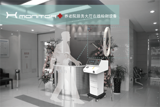
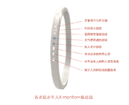
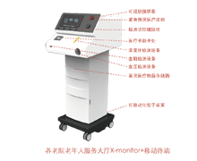
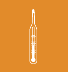
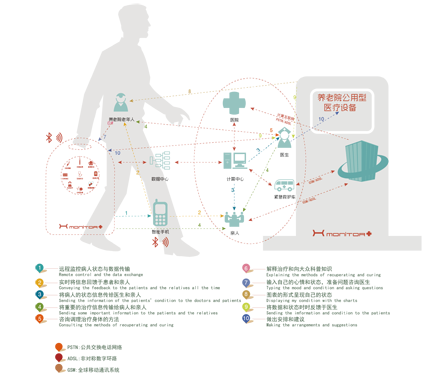
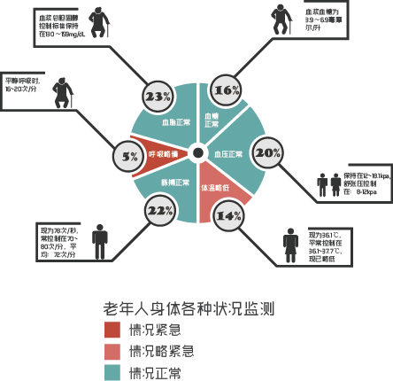
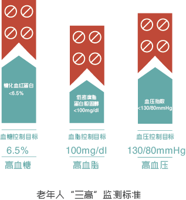
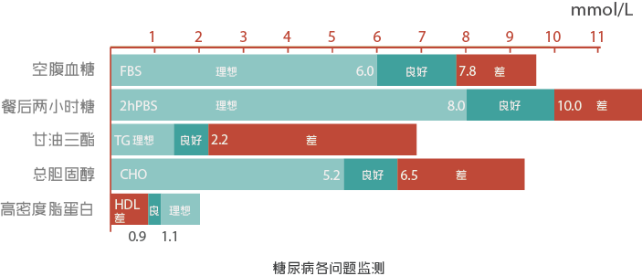

Product Design



此系统图很直观地反映了整个系统内每个元素所承担的角色，而此设备X-monitor+在整个系统中处于极核心的位置。他链接了X-monitor+、养老院、医院、亲人和手机的关系。并使得整个系统更人性化地为人去服务，将整个的资源进行有效的组合。与此同时，移动端的应用使得数据的传输和监测变得可能。所有的信息存储于结果都是由X-monitor+中的组合测量工具测量出的，然后采用云端的数据中心处理，并将数据进行有效的记录和呈现。因此在医生那边能够得到很好的反馈，并因此医生会做出相应的诊断结果以及相应的治疗方法。
Interaction Design

Grey Theme

整体的图表基于METRO的图表风格，简洁、淳朴、明快通俗易懂，更容易让老年人接受。但是为了在多彩的时尚风与淳朴风中获得有效的平衡，使得图表保持两种风格，使用者可根据自己的爱好进行调试，使得和中老年群体更好的贴合.而其中的每一个图表都可以进行相应的拓展，以及配合整个交互过程的合理使用，意在使得整套交互合理、简洁、易用与乐用。
System Design

此系统图很直观地反映了整个系统内每个元素所承担的角色，而此设备X-monitor+在整个系统中处于极核心的位置。他链接了X-monitor+、养老院、医院、亲人和手机的关系。并使得整个系统更人性化地为人去服务，将整个的资源进行有效的组合。与此同时，移动端的应用使得数据的传输和监测变得可能。所有的信息存储于结果都是由X-monitor+中的组合测量工具测量出的，然后采用云端的数据中心处理，并将数据进行有效的记录和呈现。因此在医生那边能够得到很好的反馈，并因此医生会做出相应的诊断结果以及相应的治疗方法。
Information Design



X-monitor+将温度计、血糖、血压、血脂等检测仪进行巧妙的组合。养老院中的老年人通过X-monitor+监测后，这些数据将被图表化信息化的呈现。其中就包括老年人常见问题“三高”的监测，即对于血压、血脂、血糖的监测，当老年人的这些身体数据超过相应的警戒值的时候，X-monitor+将会发出相应的警报，让这一信息尽快地让医护人员和亲人知道。将这些数据的信息设计化，使得原本生硬的数据变得生动与人性化，与此同时也让人更容易的看懂了。
Designer & Web programmer
Designer: Huang Sheng
Department: School of Art, SEU
Tel: 15651690072
Email: huangsheng@gmail.com
Web Programmer: Peng Cheng
Department: Computer Science and Engeering, SEU
Tel: 15850658985
Email: seuplaycoin@gmail.com
){kind=link}
){kind=link}
){kind=link}
){kind=link}
){kind=link}
){kind=link}
){kind=link}
){kind=link}
){kind=link}
){kind=link}
Experience the real interaction